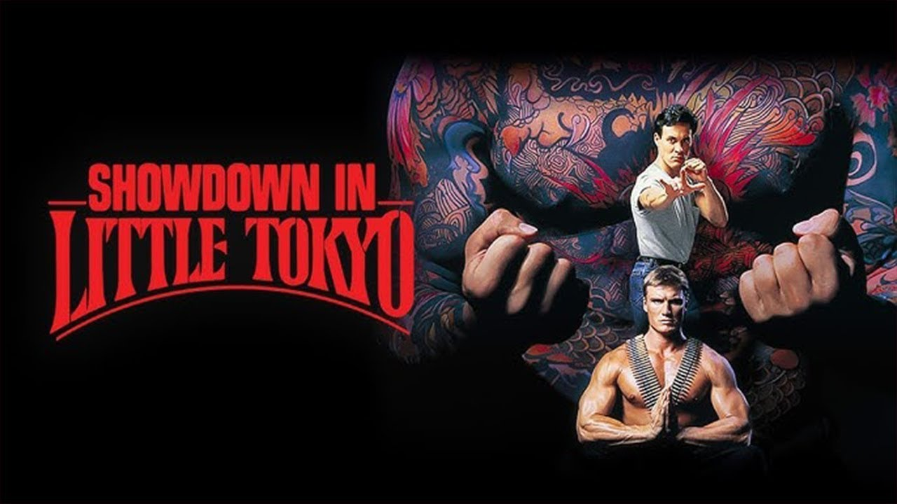
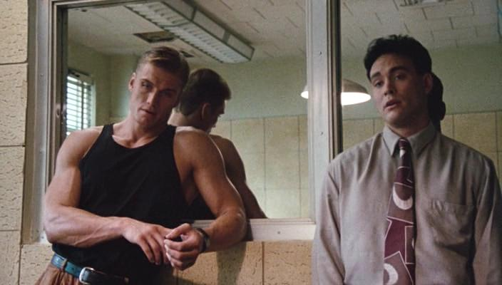
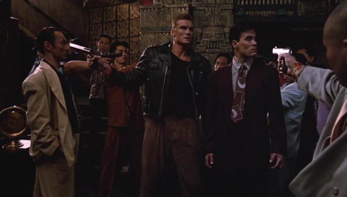

Celui-là, je ne l'ai pas trouvé dans un placard.
Je l'ai cherché.
En épluchant la filmographie de Dolph Lundgren, un nom est apparu dans le casting que je ne m'attendais pas à trouver là.
Brandon Lee.
Je connaissais Brandon Lee par The Crow. Ce film sombre, gothique, tourné dans l'ombre de sa propre mort. Une carrière réduite à une seule image — celle d'un homme qu'on n'a pas eu le temps de vraiment connaître.
J'étais curieux de voir ce qu'il était avant ça.
J'ai mis le film.
Ce soir, on découvre ensemble.

Showdown in Little Tokyo.
1991. Réalisé par Mark L. Lester — l'homme derrière Commando avec Schwarzenegger en 1985. Avec Dolph Lundgren et Brandon Lee.
79 minutes. Produit par Warner Bros, sorti rapidement des salles américaines, parti directement dans les bacs VHS partout en Europe.
La jaquette promettait de l'action, des arts martiaux, deux grands gaillards contre la pègre japonaise de Los Angeles.
Ce qu'on trouve à l'intérieur est plus surprenant. Pas à cause des scènes d'action — elles sont exactement ce qu'on attend. Mais à cause de ce qui se passe entre les deux acteurs. Une chimie réelle, inattendue, qui transforme un buddy movie d'action générique en quelque chose de plus vivant.
1991.
Hollywood est en pleine fièvre des arts martiaux. Deux ans plus tôt, Kickboxer a lancé Van Damme. Marked for Death vient de sortir avec Seagal. Le public action américain est friand de combat chorégraphié, de vilains asiatiques caricaturaux et de héros musclés qui parlent peu.
Warner Bros commande Showdown in Little Tokyo dans cet esprit. Un film d'action urbain, Los Angeles, la pègre japonaise, deux acteurs imposants. Mark L. Lester aux commandes — un réalisateur qui sait ce qu'il fait quand il s'agit de filmer de l'action pure.
Mais il y a un problème de casting que personne n'avait anticipé.
Lundgren et Brandon Lee se trouvent vraiment bien ensemble.
Brandon Lee a 25 ans. Il est le fils de Bruce Lee, ce qui est à la fois une chance et un fardeau — chaque journaliste lui pose la même question, chaque producteur attend la même chose de lui. Il cherche à exister par lui-même, à construire une identité propre.
Dans Showdown in Little Tokyo il y parvient. Face à Lundgren, il est drôle, léger, charismatique. Il vole des scènes sans forcer. Il prouve quelque chose.
Warner ne s'en rend pas compte. Le film sort, disparaît, et Brandon Lee continue sa route vers The Crow.

Los Angeles. Little Tokyo.
Kenner est un flic américain élevé au Japon, imprégné de la culture et des codes samouraïs. Johnny Murata est un flic américano-japonais qui n'a jamais mis les pieds au Japon et qui préfère les voitures rapides aux traditions ancestrales.
On les associe de force. Ils ne se supportent pas. Vous connaissez la mécanique.
Sauf que le film s'en moque un peu de la mécanique. Ce qui l'intéresse c'est de regarder ces deux hommes interagir — leurs différences, leurs frictions, et progressivement quelque chose qui ressemble à du respect mutuel.
L'intrigue tourne autour d'un chef de yakuza qui contrôle le quartier de Little Tokyo avec une brutalité sans nuances. Kenner et Murata vont le coincer.
La façon dont ils y arrivent compte moins que ce qui se passe entre eux en chemin.
Et la scène dans le restaurant vous rappellera pourquoi on aimait le cinéma d'action des années 90.
Showdown in Little Tokyo n'est pas un grand film.
Mais il contient quelque chose qu'on ne fabriquait pas — et qu'on ne fabrique plus.
La chimie entre Lundgren et Brandon Lee n'était pas dans le script. Elle n'était pas prévue par Warner, pas anticipée par Mark L. Lester, pas calculée par qui que ce soit. Elle s'est produite sur le plateau, entre deux hommes qui n'avaient aucune raison évidente de bien fonctionner ensemble — l'un massif, sobre, nordique, l'autre léger, ironique, en perpétuelle recherche de sa propre identité.
Et pourtant.
Brandon Lee vole chaque scène où il apparaît. Pas en forçant — en étant simplement plus vivant que tout le reste. Il regarde Lundgren avec une tendresse moqueuse qui n'est pas du tout ce que le film demandait, et c'est exactement ce dont le film avait besoin.
La scène du restaurant en est la démonstration parfaite. Pas pour l'action — pour ce qui se passe dans les regards, entre les coups. Deux hommes qui commencent à se faire confiance sans se le dire.
En 1991, Brandon Lee a 25 ans. Il cherche encore qui il est au cinéma. Showdown in Little Tokyo est l'un des rares films où on peut voir cette recherche en temps réel — et entrevoir ce qu'il aurait pu devenir si The Crow n'avait pas été le dernier mot.

Showdown in Little Tokyo est tombé dans un angle mort précis.
Trop sérieux pour être un film de kung-fu marrant. Trop léger pour être pris au sérieux comme thriller. Les critiques de 1991 n'ont pas su quoi en faire — et quand les critiques ne savent pas quoi en faire, ils expédient. Deux lignes, une étoile, suivant.
Warner Bros n'a pas cru au film non plus. Sortie limitée, marketing minimal, passage rapide dans les bacs vidéo. Le studio avait d'autres priorités cette année-là.
Et puis il y a le problème de la date. 1991 c'est l'année où le cinéma d'action américain commence à changer de visage — Terminator 2 arrive six mois plus tard et change les règles du genre pour une décennie. Un buddy movie d'action construit sur de la présence humaine et de la chorégraphie physique, sans effets spéciaux, sans franchise derrière — ça devient soudainement anachronique.
Enfin il y a Brandon Lee. En 1991 il n'est pas encore une icône — il est juste le fils de Bruce Lee qui cherche sa voie. Personne ne comprend encore ce qu'il vaut. Ce n'est qu'après The Crow, après sa mort, que les gens ont commencé à chercher ce qu'il avait laissé derrière lui.
Showdown in Little Tokyo était là. Personne ne regardait.
Parce que Brandon Lee mérite mieux qu'une seule image.
The Crow est un grand film. Mais il est aussi un tombeau — une œuvre définitive qui a figé Brandon Lee dans une seule posture, celle du martyr gothique, de l'icône maudite. Une image puissante qui a effacé tout le reste.
Showdown in Little Tokyo est le reste.
Un jeune homme de 25 ans qui cherche, qui teste, qui trouve. Léger là où The Crow est lourd. Ironique là où The Crow est grave. Vivant d'une façon différente — pas tragique, pas romantique, juste présent, drôle, magnétique.
Et à côté de lui, Lundgren — qu'on redécouvre depuis l'épisode précédent — confirme ce qu'on commençait à comprendre. Qu'il était capable de bien plus que ce que Hollywood lui demandait. Que la sobriété pouvait être une force.
Ces deux hommes ensemble, dans ce film imparfait, pendant 79 minutes — c'est un document.
Pas sur le cinéma d'action des années 90.
Sur ce qu'on a perdu trop tôt.
Showdown in Little Tokyo n'est pas le film que j'attendais quand j'ai cherché Brandon Lee dans la filmographie de Lundgren.
C'est mieux que ce que j'espérais.
Pas un chef-d'œuvre. Pas un film qui change la vie. Mais un film qui prouve quelque chose d'important — que la présence humaine, la vraie, celle qu'on ne fabrique pas, peut transformer n'importe quel matériau en quelque chose qui vaut la peine d'être vu.
Brandon Lee avait cette présence.
On n'a pas eu le temps de s'en rendre compte.
SOMEDAY est aussi là pour ça.
La cassette est dans le lecteur. On rembobine.
Titre original
Showdown in Little Tokyo
Pays
États-Unis
Genre
Action
Durée
79 min
Producteur
Warner Bros
Fil conducteur
Brandon Lee — Saison 1
Regarder l'épisode
SOMEDAY — EP. 03